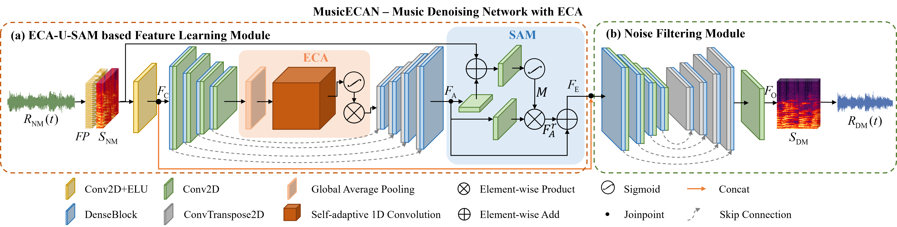

Fig. The framework of the proposed MusicECAN, which includes two components: feature learning module and noise filtering module.
Listening test examples
Comparisons of different audio denoising methods. We compare the denoising results of state-of-the-art denoising methods and our MusicECAN. In each group, the top recording is the noisy music.